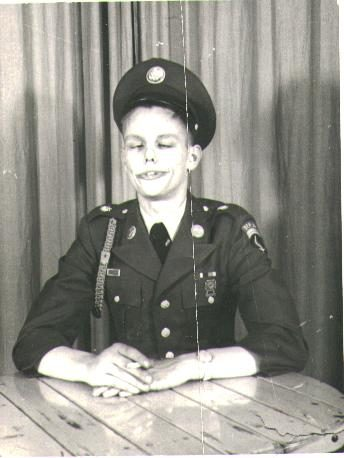
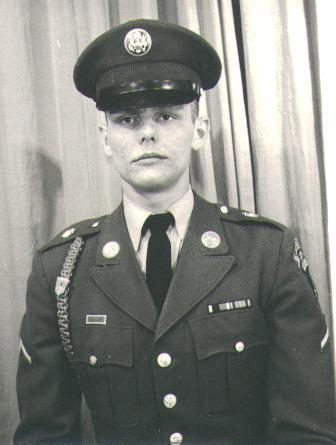
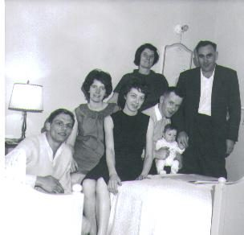

Part IV · THE YEAR THE FAMILY BROKE APART · Chapter 15
Incommunicado
West Berlin · the Western Pacific · Ireland · 1961–1965
In the record Al Krewson (b. 1943) · Glenn Krewson (b. 1943) · Maj. Herbert Manifold Mitchell · M.C. (d. 1963/64) · Félice Mitchell (née Knight)
The word is Glenn's. Asked in August 2000 what had become of the Irish property, Michael's father wrote: "Grandfather died intestate [without a will] and at the time I was incommunicado, on assignment, on board the USS Robison DDG 12, and all the property went to my cousins, before I got word of probate. Granny also was cheated out of her due as well" [1]. It is the third farm this book has watched leave the family — after the 580 acres of Bucks County sold out from under a burned will in Part II, and the Oklahoma farm of 1946 that never existed — and the only one lost to nobody's fault. Two brothers, born ten months apart, were in 1963 exactly where a young man of no money and a broken family went in that decade: one in the Army, one in the Navy, each on the far side of something from the other.
The soldier
Al enlisted at eighteen, in 1961 — Glenn's account is that he had tried the Navy first, to be with his brother, and "flunked the physical [polio?], and so he joined the Army" [1]. Where the Army sent him was West Berlin. A photograph the family titles "Al Krewson's Sanity Test, Berlin, Age 19" shows him in dress greens at a table, cap on, hands folded, eyes closed and grinning — a private's joke in 1962 [2]. The Wall had gone up on the night of 12–13 August 1961. The American garrison, the Berlin Brigade, sat a hundred and ten miles inside East Germany, reachable by road along one authorised autobahn and by rail on the nightly duty train through the Soviet checkpoints at Helmstedt and Marienborn, and it spent 1962 rehearsing for the thing it could not have stopped [3]. What Al remembered of it forty years later he told Michael in a paragraph:
I was stationed in the Army in Berlin during the crisis, and we were too busy having to deal with possible riot controls due to people trying to escape from East Berlin and being shot by the Russians. Yes, this really happened. Leaves were scarce for outside of Berlin. I tried to get one but was refused, even though I wanted so much to see my brother after so many years. It was a great disappointment for all of us … but there was absolutely nothing I could do about it. Don't forget that we were 110 miles behind the Iron Curtain, and the Russians were not open to letting people (especially American Army folks) pass through their checkpoints to the free world.
Al Krewson to Michael, 26 June 2002 [2]."Yes, this really happened." The shooting he means is the one every soldier in the Brigade that year remembered: Peter Fechter, eighteen, shot at the Wall near Checkpoint Charlie on 17 August 1962 and left to bleed to death in the strip while West Berliners screamed at the American guards to do something and the American guards, under orders, did nothing; there were riots at the checkpoint for nights afterward, and the Brigade was on riot duty [3]. The guards who shot Fechter were East German, not Russian; Al's "Russians" is how a nineteen-year-old private understood the far side of the Wall, and the book leaves his word in his sentence.

The sailor
Glenn had gone into the Navy and to sea. The ship he names, the USS Robison (DDG-12), was a Charles F. Adams-class guided-missile destroyer, 437 feet, commissioned in December 1961 and home-ported at San Diego — one of the new Tartar-missile ships the Pacific Fleet was sending west in rotation in 1963 and 1964 [4]. A destroyer on a Western Pacific deployment in those years was gone six or seven months, and a sailor aboard her got his mail when the ship did. "Incommunicado, on assignment" is what that looked like from the deck.
But in 1963, before the deployment or between them, he had gone the other way — across the Atlantic. "In 1963 your Dad went to visit Granny in London, then went to Ireland to meet Grandpa," Al wrote; "I was to meet him at Granny's in London but couldn't make it" [2]. Glenn's account of that visit is the warmest thing he ever wrote about the family: "Grandpa and I got along so well, I really grew to love him, and he got to really love me, while I was in Ireland" [1]. It was then, he believed, that the major settled on him as his heir — "I was to inherit this property" — and, in the same sentence, that both grandparents "were both so very much relieved to know I was not like my brother." The last chapter put that sentence beside Al's own account and let them stand. What matters here is the timing: a sailor of nineteen, on leave in Ireland, was told or came to believe that the estate in the mountains would be his, and went back to his ship.
The death
Herbert Mitchell died "in 1963 or early 64" — Al's dating; the family has no certificate [2]. Glenn's account of the cause is the one the record carries: "Grandfather died of war disabilities from wounds he received over 40 years prior, he died of shrapnel wounds received on the battle field that shifted, and then cut him internally and he bled to death" [1]. Al, who had lived with him, does not describe the death; what he describes is not being there:
Unfortunately he died while I was in Berlin, and the Army would not give me emergency leave to return to Ireland for his funeral. This really turned me against the Army, especially when I told them he raised me during my adolescence. Their fears were that I didn't know my way around Ireland … also that he was not a close blood relative. I assured them I most certainly did know my way around the country quite well and was very much at home there. One of the things I wanted to retrieve were those letters from my dad that he wrote me before I left LA. Well, wisdom was at play … even with the Army. It turned out Granny didn't find out about his death until 3 months later, though she immediately wired me with the sad news. The funeral was long done and his property was closed off for legal reasons pertaining to inheritances, etc., so I couldn't have gotten them anyway.
Al Krewson to Michael, 21 January 2005 [5].Read the two accounts together and the shape of the thing appears. A man died in Ireland; his wife, in London most of the year, did not learn of it for three months; a grandson in Berlin was refused leave; another grandson was at sea; the man had made no will; and by the time any of them could act, the property had "gone to my cousins" and the widow had been "cheated out of her due." Whose cousins, Glenn does not say — Herbert's, presumably; "my Grandpa's estate in Ireland went to his direct relatives, but I don't know who. He never had any kids of his own" is Al's version [5]. The book cannot name them either. What it can add is the law, which explains more than a family's sense of injury does. Until the Succession Act of 1965 took effect on 1 January 1967, an Irishman who died without a will left his land not to his widow but to his heir-at-law under the old rules of descent — the nearest male relative in the male line — and the widow's claim on it was a life interest in a third. Herbert died a year or two before the reform. If the estate was land, as an estate in the mountains would be, it went to his blood relations by operation of law, and a childless widow in London had no way to keep it and no grandson-by-marriage had any claim at all. "Cheated out of her due" is exactly what the old law felt like from inside a family, and exactly why it was changed. The grant of administration that the Irish National Archives' catalogue lists for 1963 — the entry that would not open — would give the name of the person who took it out, which is the name of the heir [6].
What the family says: that Glenn was to inherit the Irish estate, and that it was lost because Herbert died without a will while Glenn was at sea. Documented so far: nothing — no will (by definition), no grant of administration seen, no deed. The book's reading of the pre-1967 intestacy law is an explanation of how the family's account could be true, not evidence that it is.
Glenn Krewson, 22 August 2000; Al Krewson, 2002 and 2005 [1] [2] [5].The road home
Al reached Granny in London "almost a year later" — 1964 — on a leave granted because he was about to be discharged, and got, as the last chapter told, the reprimand about the Wall [2]. A second Berlin photograph, "Al Krewson in Berlin, at Age 21," a formal dress-uniform portrait, is from that year [2]. Then he went home the long way, and the paragraph in which he tells it is worth having whole, because it is the only account in the archive of how one of these people actually crossed the world:

I then made a quick trip to Dublin and made arrangements for my upcoming discharge from the Army, got discharged in Berlin and passed through the Russian Checkpoints as a civilian on a military train to Frankfurt. From there I flew to London, then to Dublin. I soon ran out of money and couldn't get work there, so I went to England to an American Air Force Base and got a free ride to the States. I stayed in New York for a while, earned enough money to get back to California to my brother and sisters … then eventually went into the Navy.
Al Krewson to Michael, 26 June 2002 [2].The duty train through Marienborn with a discharge paper instead of orders; Dublin with no money and no work in the last year of the emigration decade; a hop on a Military Air Transport flight out of an American base in East Anglia — the ordinary route home for a broke ex-soldier in 1964 [3]. And New York: the family archive holds a photograph titled "Al Krewson with Irish Family in Manhattan, Age 22" — 1965 — seven people crowded onto and around a bed in a small apartment, Al in shirtsleeves at the left, a baby held up in the middle, an older man standing at the right in a suit [2]. Who they were, the caption does not say. An Irish family in Manhattan who put up a twenty-two-year-old with a Dublin education and no money, in the year he "stayed in New York for a while," is the likeliest reading; the book treats them as the people who got him the rest of the way to California. Then California, and his brother and sisters, and "eventually" the Navy — the second service, the one that would take him, on his own word, to Vietnam. That is the next chapter's.

Granny, widowed, left London for Málaga. Glenn came off the Robison, married, and was in Massachusetts by 1971, where Michael was born [7]. The estate in the mountains passed to people none of them could name, and the family's letters never mention Ireland again except to say what was lost there.
The ground it happened on
Period-general, as always. West Berlin in 1962 was an island of two million people, 185 square miles, with a wall around its eastern half and a fence around the rest; the American sector's Brigade — about six thousand men at McNair and Andrews Barracks — drilled for a siege everyone knew would be a formality if it came, and stood at Checkpoint Charlie in October 1961 while American and Soviet tanks faced each other at a hundred yards [3]. The duty train ran nightly to Frankfurt and back, blacked out through the East, halted at Marienborn for Soviet officers to check the manifest; soldiers were forbidden to look out. A Charles F. Adams destroyer in 1963 carried about 350 men, two five-inch guns and a Tartar missile launcher aft, and rolled badly; her Western Pacific deployments touched Pearl Harbor, Yokosuka, Subic Bay and Hong Kong, and from 1965 the gunline off Vietnam [4]. The Slieve Bloom house, meanwhile, stood empty in a winter no one in this family saw — the major dead, his widow in London, the boy in Berlin — while the law did what the law did.
- Glenn M. Krewson to Michael, 22 August 2000 — herbert-manifold-mitchell-glenn-krewson-2000-08-22.htm: "incommunicado … USS Robision DDG 12" (spelled so in the email), the intestacy, the cousins, "Granny also was cheated out of her due," the shrapnel death, the 1963 visit, Al's Navy physical. The family record's story "Major Herbert Manifold Mitchell, M.C."
- Al Krewson to Michael, 26 June 2002 — family-history-uncle-al-2002-06-26.htm (Berlin, the refused leave, the reprimand, the road home); the family archive's photographs "Al Krewson's Sanity Test, Berlin, Age 19" (c. 1962), "Al Krewson in Berlin, at Age 21" (c. 1964), and "Al Krewson with Irish Family in Manhattan, Age 22" (c. 1965). Dates from the captioned ages and his stated birth date, 2 February 1943.
- The Berlin Brigade, the Wall (13 August 1961), the Checkpoint Charlie tank confrontation (27–28 October 1961), the death of Peter Fechter (17 August 1962) and the riots after it, the duty train and the Helmstedt–Marienborn checkpoints, and MATS/MAC space-available flights from the East Anglian bases: general histories of Cold War Berlin and of the U.S. garrison; period-general, not a record of Al's unit or dates, which are not on file.
- USS Robison (DDG-12): Charles F. Adams-class guided-missile destroyer, commissioned 9 December 1961, Pacific Fleet, San Diego; Western Pacific deployments from 1963; Vietnam gunline service from 1965 — the Dictionary of American Naval Fighting Ships and the class's published histories. Glenn's dates aboard are not on file; his service record (NPRC, St. Louis) is the lead.
- Al Krewson to Michael, 21 January 2005 (the first and second emails): the refused emergency leave, Granny's three-month delay, "his property was closed off for legal reasons pertaining to inheritances," the lost letters; "My Grandpa's estate in Ireland went to his direct relatives, but I don't know who."
- Irish intestate succession before the Succession Act 1965 (commenced 1 January 1967): realty descended to the heir-at-law under the common-law canons of descent as modified by the Inheritance Act 1833, the widow taking dower (a life interest in one-third); the 1965 Act replaced this with the widow's statutory share. A general statement of the law, offered as inference about this estate. The National Archives of Ireland's Calendar of Wills and Administrations 1963/1964 entry: see chapter 14, note 6.
- Félice's move to Málaga after Herbert's death: Al, 26 June 2002. Michael's birth in Massachusetts, 1971: his own birth certificate, naming the father "Glenn M Krewson" (the family record).